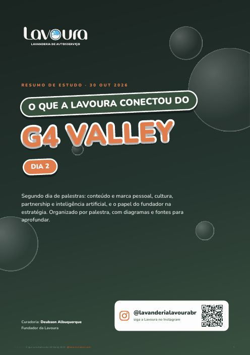
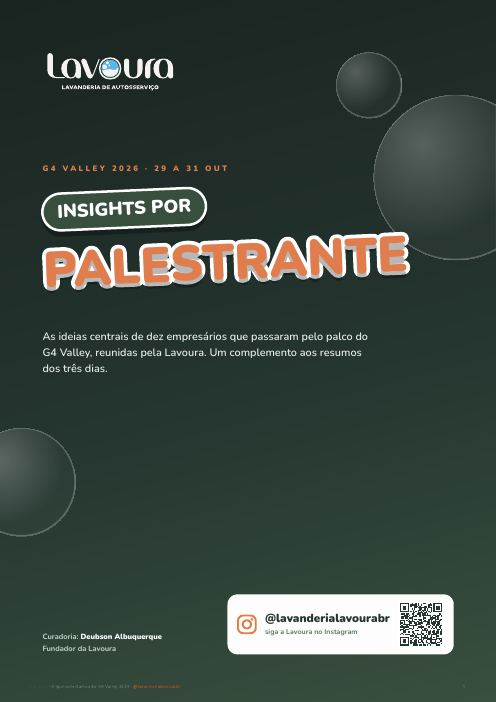

Três dias de palestras com 15 mil empresários do Brasil todo. Organizamos tudo o que aprendemos em resumos por assunto, insights de cada palestrante e um diagnóstico gratuito para a sua empresa.
A Lavoura é uma rede de lavanderias de autosserviço nascida em Boa Vista (RR). O nome veio da busca por um elemento comum a todo o Brasil que representasse acolhimento: o café, que é cultivado na lavoura. Em cada unidade, lavar roupa vira um momento bom do dia.
Fomos ao G4 Valley aprender com quem está construindo empresas grandes no país. Em vez de guardar as anotações, organizamos tudo para compartilhar com franqueados, parceiros e com quem quer crescer junto com a gente.
Curadoria: Deubson Albuquerque, fundador da Lavoura.
Cada resumo é organizado por assunto, com diagramas para memorizar e as fontes para se aprofundar.
105 pessoas já receberam os resumos

Conteúdo do fundador (os 12 passos), cultura, partnership e IA, e o papel do fundador na estratégia.
Mentoria e cases, franquia como modelo de escala, founder-led growth e como operar com IA.

As ideias centrais de dez palestrantes, de Alexandre Costa a Steve Wozniak.
Uma frase-âncora e as ideias principais de cada palestrante. Toque em "ver todos" para abrir a lista completa.
18 perguntas montadas a partir do que foi ensinado nos três dias. No fim, você recebe a nota em seis áreas, o gargalo típico da sua fase e setor, e o que melhorar na empresa e em você como líder.